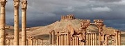
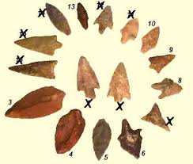
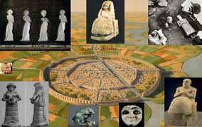

Préhistorique
La Préhistoire commence avec l'apparition de l’Homme, or celle-ci est le fruit d’une lente évolution sur plusieurs centaines de milliers d’années, depuis un Hominidae indéterminé2. Ce début varie selon les chercheurs en fonction des critères utilisés pour définir l’Homme, qui peuvent être strictement phylogéniques, anthropologiques, culturels, voire philosophiques… Le genre Homo apparaît il y a environ 2,8 millions d'années (d'après un fossile apparenté à ce genre découvert en mars 20153). Plusieurs espèces se développent, dont Homo rudolfensis (vers -2,4 Ma4) et Homo habilis (-2,5 Ma), qui ont coexisté en Afrique de l’Est. Ces deux espèces adoptent une locomotion bipède et produisent probablement des outils, deux traits longtemps considérés comme propres au genre humain. Des découvertes plus récentes ont montré que les Australopithèques, qui les précédaient et dont ils sont issus, avaient eux aussi adopté une locomotion partiellement bipède. De plus, les plus anciennes industries lithiques ont longtemps été considérées comme la création exclusive des représentants du genre Homo mais aussi des Paranthropus, formes robustes d’Australopithèques tardifs. Néanmoins, cette hypothèse a été remise en cause en 2015, à la suite de la découverte d'un site d'industrie lithique, à Lomekwi 3, au Kenya, daté de 3,3 Ma : une date nettement antérieure à l'apparition du genre Homo5. Certains Australopithèques étaient donc capables de fabriquer des outils. Les traits morphologiques ou comportements traditionnellement associés au genre Homo semblent donc être partagés par plusieurs genres chez les Hominines. Selon que l’on considère que l’Homme est représenté par le seul genre Homo ou également par le genre Australopithecus, la Préhistoire débute donc respectivement il y a environ 2,8 Ma ou 4,2 Ma (estimation de l'apparition des premiers Australopithèques jusqu'à preuve du contraire).Préhistorique qui s'étend de 2300000 ans à 3200 ans j.c ,La Syrie considère les archéologues centre pour l'une des plus anciennes civilisations de la terre [1] .vhna fut le début de la colonisation humaine et la planification des premières villes et la découverte de l'agriculture et la domestication des animaux et la connaissance de l'évolution de l'alphabet a été découvert ici (la première première charrue machette) et est divisé en plusieurs époques :

Âges historiques anciens
.Bronze est produit à partir de mélange d'étain de cuivre à un taux d'environ 90% de cuivre et 10% d'étain. Il couvre la période de la période entre l'âge du bronze ère cuivre et de fer âge est différente de la date de son apparition dans différentes parties du monde selon le stade de la civilisation pour chaque région. L’âge du bronze est une période de la protohistoire et de l'histoire caractérisée par un usage important de la métallurgie du bronze. Le bronze est le nom générique des alliages de cuivre et d’étain. Aujourd’hui, il est admis que cette période succède à l’âge du cuivre ou chalcolithique et précède l’âge du fer, dans les régions du monde où ces catégories sont pertinentes. Comme pour les autres périodes de la préhistoire, les limites chronologiques de l’âge du bronze varient considérablement selon l’aire culturelle et selon l’aire géographique considérées. D'autres alliages de bronze comprennent le bronze, le phosphore bronze d'aluminium, le bronze de manganèse et de la cloche de métal et d'arsenic miroirs de métal d'alliage de métal de bronze et de cymbales en alliage. les temps historiques ancinens stretching depuis le début de l'invention de l'écriture e avant J.C à la naissance de jésus-christ,Les premières villes de l'histoire, comme royaume archéologique Ebla dans le nord de la Syrie fille d'un empire allant de la mer Rouge, dans le sud de la Turquie dans le nord et l'est jusqu'à l'Euphrate continue 2500-2400 av. Comprend la Syrie, en plus de tant de civilisations, des villes et des royaumes tels que le Royaume de Marie, et Ugarit, et Ramata, et juste, et Dura-Europos, et Serjila et Krk Paisa, le tracteur et Qatorh, circuit nommé, le soleil, et Basoufan, le Prophète Hori, et Arwad, et le coton, et Shahba / Vilipols, canaux et Salkhad et Apamée, et féroce Carr, et le retour, le phare, et total, Deir Sunbul et Imar, et nos parents, et Sarmada et des dizaines d'autres villes. Le grand nombre de civilisations qui ont et traversé sur le territoire syrien grands et riches sites historiques remontant à tous les âges et les cultures les rendent font la Syrie la porte d'entrée de la date, il a construit sur la terre de Syrie, de nombreuses civilisations et habité par des gens de divers, peuvent être quantifiées respectivement: Sumériens, akkadien, Chaldéens, Cananéens, Araméens, Hittites, Babyloniens, Perses, Grecs, Romains, Nabatéens,, et est divisé à :.

Ère chrétienne et islamique
Il étend les temps historiques modernes depuis la naissance de jésus-christ jusqu'à la fin de l'empire ottoman en 1924 , et est divisé à :